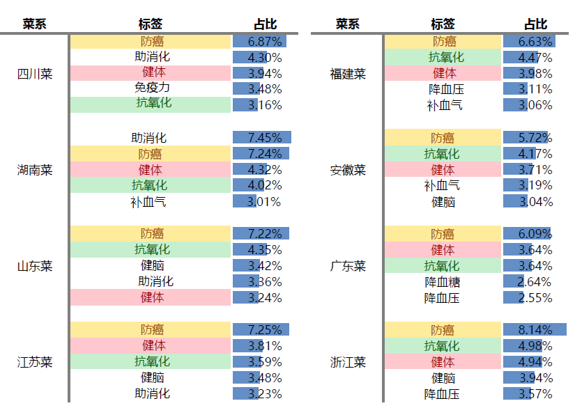
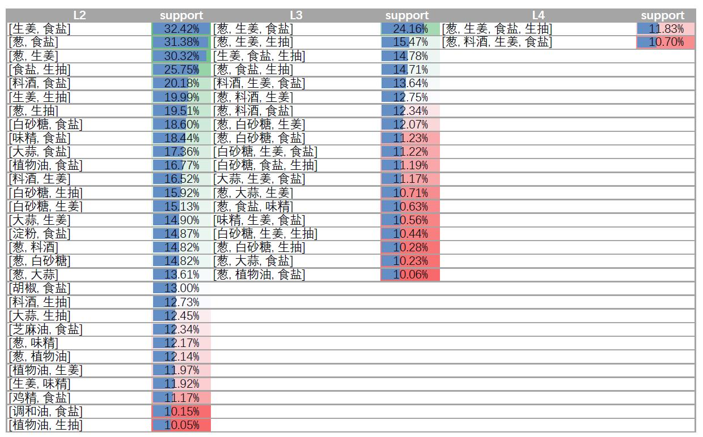
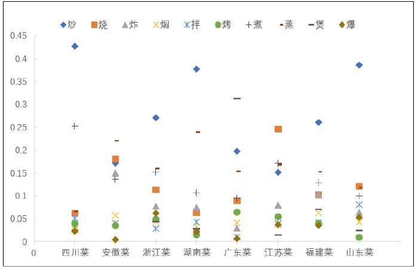
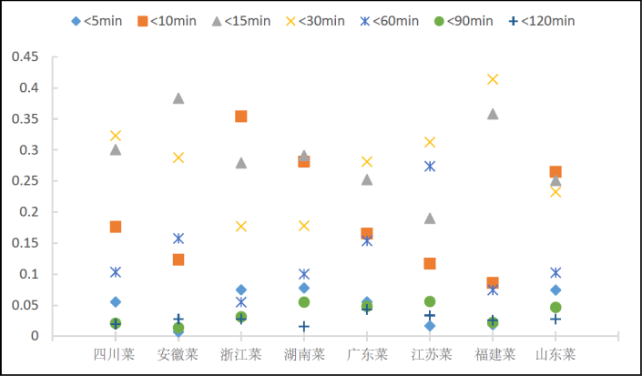
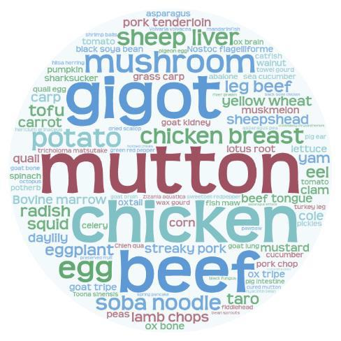
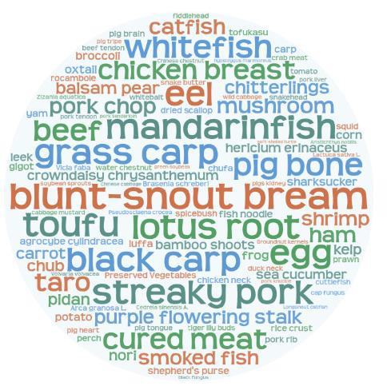
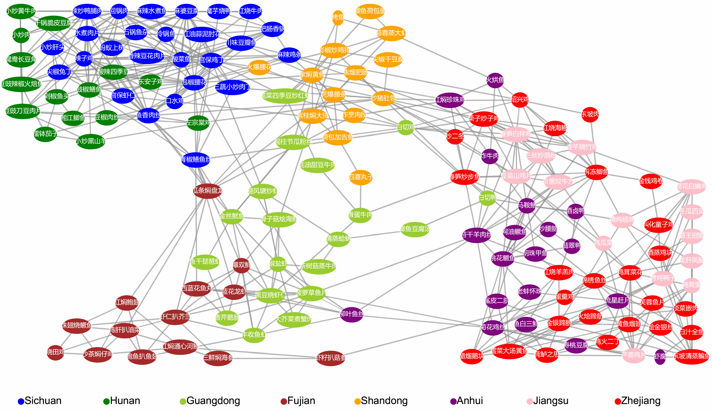
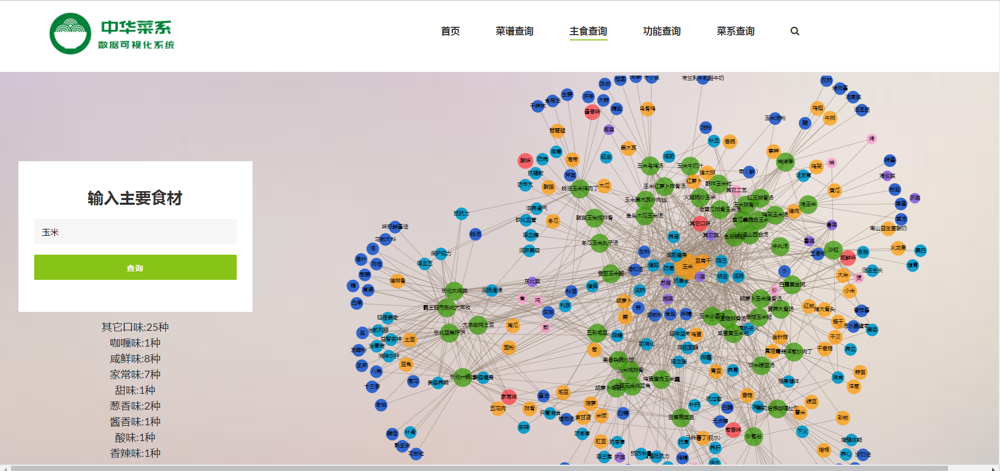

中华菜系数据分析与探索
中国作为一个地域广阔、人口众多的国家, 孕育着丰富的饮食文化, 衍生了多种菜系, 其中最为知名的有中国八大菜系。通过数据采集技术爬取到了大量的在线食谱数据, 并以这些食谱数据作为研究基础, 对中国各大菜系展开探索式地数据分析。
(1)对在线食谱的成分多样性展开分析, 包括成分消费多样性及成分组合多样性
(2)对中国各个菜系食谱的特色成分进行分析
(3)对中国在线食谱的复杂性从成分数量、烹饪时间、烹饪工艺三个方面进行了评估
(4)根据食谱的成分、口味、烹饪工艺这些特征, 分析了食谱之间的相似性, 并通过可视化的技术展示了不同菜系之间的关联性
(5)我们对在线食谱的辅料成分进行频繁项的挖掘, 以探索经常使用的辅料成分组合
|  |  |
| 食谱的标签分布 | 食谱的辅料频繁模式 |
|  |  |
| 烹饪工艺 | 烹饪时间 |
|  |  |
| 西北菜特色 | 湖北菜特色 |

中华菜系食谱间的关系

中华菜系食谱探索分析系统